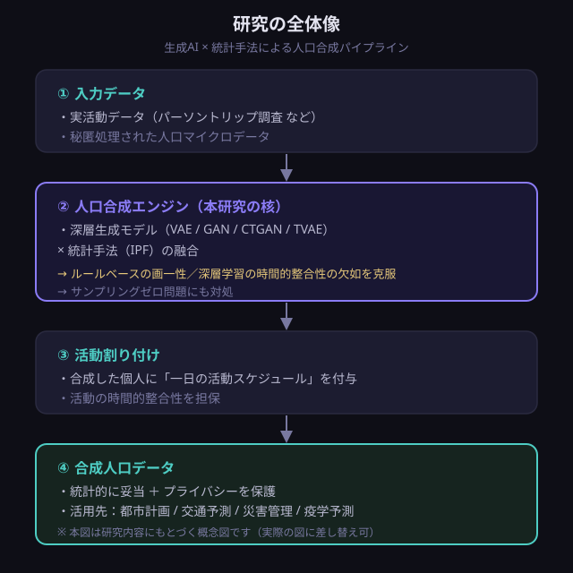

研究・共同研究
2024–2026
物体検出モデルを用いた豚の交配行動 自動検出システム
立ち上げ・実装・評価を主導（他学部との共同研究）
畜産現場での交配タイミングの見極めを支援するため、物体検出モデル（YOLO）で豚の交配行動を映像から自動検出するシステムを開発。 テーマの立ち上げからデータ整備・モデル実装・評価、現場で使えるGUIの構築までを一貫して主体的に進めました。

Research Portfolio
大阪大学大学院 情報科学研究科 マルチメディア工学専攻 データ生成工学講座 ／ 修士1年
生成AIで「合成人口の生活行動」を扱う研究者。
プライバシーを保ったまま、社会のデータ制約を解くことを目指しています。
過去 · 現在 · 未来
高校まではサッカーに打ち込む毎日でした。たびたび怪我に悩まされ、思うようにプレーできず打ちのめされることも少なくありませんでしたが、プレーできない時間は体を鍛え、空いた時間は練習に充てる — そうして腐らずに続けることを覚えました。
転機は、授業の一環で受けた全商情報処理検定1級。ここで初めて「情報処理」や「学ぶこと」そのものの面白さに気づき、もっと学びたいという思いから県内の専門学校（徳島穴吹カレッジ）への進学を決めました。
専門学校では資格取得に力を注ぎ、それまで避けてきた勉強にも「学ぶ面白さを知った今の自分なら挑戦できる」と信じて取り組み、応用情報技術者試験に合格。さらにChatGPTをはじめとする生成AIの台頭に触れ、「自分もこの技術を理解し、扱えるようになりたい」という思いが強く芽生えました。
機械学習・深層学習を本格的に学び、研究したい — そう考え、AIを学べる徳島大学 理工学部 知能情報コースへの3年次編入に挑戦し、合格しました。
学部3年次後半、仮配属していた研究室が教員の都合で変わり、研究テーマを白紙から考え直すことに。 私はこれを「自分のやりたい研究に挑戦できる絶好の機会」と捉え直し、関心分野の論文を幅広く調べて方向性を定め、新しい担当教員へ自ら提案。 結果として、他学部との共同研究で「物体検出モデルを用いた豚の交配行動自動検出システム」というテーマを獲得し、立ち上げから実装・評価まで主体的に進めました。
現在は大阪大学大学院で、深層学習を用いた「合成人口データにおける生活行動データ生成」をテーマに研究しています。 VAE・GAN・CTGAN・TVAEといった深層生成モデルを、論文の理論を精読したうえでPyTorchやNumPyで自ら実装し、その挙動を一つ一つ検証。 プライバシーを保護しながら、現実の人々の生活行動を統計的に妥当に再現することに挑んでいます。
意識しているのは、関連するカンファレンスへの論文執筆をコンスタントに続けること。 ここでも自分にできることを常に模索し、たどり着いた答えは — 研究のイテレーションを素早く、濃密に回し続けることだと考えています。
目指すのは、私たちが生きる社会に広く影響を与えるものを生み出すことです。
より大きく、世界にインパクトを与えられる研究者になること、そしてその価値を社会やコミュニティへ還元すること — それが、生涯をかけて自分にできることだと考えています。
このために、いま自分にできることを尽くしていきます。
私が大切にしているのは、今の自分にできることを模索し、挑戦し続けることです。 部活動ではプレーできない時間の過ごし方を、専門学校では資格取得と編入を、大学では研究のサイクルを回すことを — それぞれの場所で、その時々の自分にできることを常に探し、実行してきました。 そしてこれからは、社会やコミュニティに広く共有されるものを生み出すことに、同じ姿勢で挑んでいきます。
問い · アプローチ · 進捗と展望
公的な集計統計から、属性条件付きの活動スケジュールを再現する
個人を直接観測したデータが乏しい状況でも、誰もがアクセスできる「集計統計」だけから、年齢・職業などの属性に応じた一日の生活行動（活動スケジュール）を、統計的に妥当かつプライバシーを保って再現できるか。
都市交通計画や政策立案には個人単位の行動データ（人口マイクロデータ）が不可欠ですが、調査票情報は秘匿処理され直接利用が困難です。 一方で、パーソントリップ調査や社会生活基本調査は、時刻別の行動者率などを属性・地域で層別した「集計」として公開しています。 この「豊富な集計」と「乏しい個人データ」のギャップを生成モデルでどう埋めるかが、本研究の出発点です。 加えて、行動の表形式データには連続・離散の混在、多峰性、カテゴリの著しい不均衡があり、画像・言語向けの手法をそのまま適用できない難しさもあります。
新しい生成器を一つ提案することではなく、次の3つを一本につなぐことを軸に置いています。
これらを日本の公的データに根ざして検証し、プライバシーと妥当性を両立させます。 手法面では VAE 等の深層生成モデルと IPF 等の統計手法の組み合わせを基盤に、理論を精読して自前実装・検証しています。
この分野は新規生成器の“単発提案”が増え、評価条件の不統一から論文間で結果が比較しにくいという指摘があります。 本研究は生成器そのものの新しさではなく、「集計からどこまで学べるか」「どう評価されるべきか」を問い直す立場をとります。

深層生成モデル（VAE / GAN / CTGAN / TVAE）と統計手法（IPF）を、論文の理論を精読したうえで PyTorch / NumPy で自前実装し、挙動を検証中です。評価設計と日本データでの検証はこれからのフェーズです。
▸ 結果・知見：[TODO — 予備実験の結果が出たらここに追記]
プライバシーを保ちながら、実データの統計的性質を再現する
VAE・GAN・拡散モデルなど、表形式・系列データ向けの生成手法
「いつ・何をするか」— 一日の活動スケジュールの生成
個人データに頼らず、公開された集計統計から学ぶ
国・地域をまたいで、行動データの構造を転移する
feasibility・分布適合・微分プライバシーによる、品質と安全性の担保
論文の理論を精読したうえで、連続値の多峰性正規化やカテゴリ変数の不均衡といった表形式データ特有の課題まで踏み込んで理解し、実装に反映しています。
モデルを自分の手で実装し、その挙動を一つ一つ検証。「動くこと」だけでなく「なぜそう動くのか」を確かめながら研究を進めています。
機械学習の理論・統計手法・ドメイン知識を統合し、実際の活動データと組み合わせることで、生成データの妥当性とプライバシー保護を両立させます。
自分の手で作りきったもの
立ち上げ・実装・評価を主導（他学部との共同研究）
畜産現場での交配タイミングの見極めを支援するため、物体検出モデル（YOLO）で豚の交配行動を映像から自動検出するシステムを開発。 テーマの立ち上げからデータ整備・モデル実装・評価、現場で使えるGUIの構築までを一貫して主体的に進めました。

専門学校在学中の制作
C言語とSDLライブラリで2人対戦型の2Dシューティングをゼロから制作。 描画・入力・当たり判定・ゲームループといった低レイヤーの仕組みを自分の手で組み上げ、コンテストで受賞しました。 ［TODO: コンテスト名・賞の名称・受賞年を記入］
学歴 · スキル · 資格 · 業績
データ生成工学講座／修士1年 在学中（生成AIによる人口合成を研究）
3年次編入・卒業（高信頼マルチモーダル感性知能と知識工学研究室 [TMAK]／深層学習・画像処理）
卒業（情報システムの基礎を習得）
卒業
研究室の外の自分
研究の外では、体を動かすことが私のリズムを整えてくれます。サッカーやバスケットボールでは仲間と呼吸を合わせる楽しさを、マラソンでは自分のペースで目標に向かい続ける粘り強さを学んできました。 学生時代には、C言語とSDLによる2D対戦シューティングの制作（コンテスト受賞）や、Arduinoを用いたロボットコンテストにもチームで打ち込みました。 「仲間と挑戦すること」と「自分の手で作りきること」 — スポーツもものづくりも、その姿勢は研究と地続きです。
チームで連携して一つの目標を狙う面白さが好きです。状況を読んで自分の役割を考える感覚は、研究で全体像を捉える視点にも通じています。
めまぐるしく変わる局面のなかで、瞬時に判断して動く緊張感が魅力。仲間と声を掛け合いながら流れを作っていく時間が、良い気分転換になっています。
自分のペースを守りながら目標までやり切る競技。コツコツ積み重ねて結果につなげる感覚は、長期的に向き合う研究そのものだと感じています。
※ 現在はサンプル枠です。下の各枠を、公開してよい写真に差し替えてください（画像クリックで拡大）。